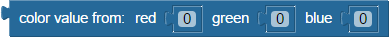

BlocklyProp reference for VALUES blocks


 Compatible with all Propeller board types (except Scribbler Robot)
Compatible with all Propeller board types (except Scribbler Robot)
number value
The number value block is a value that is usually placed in or attached to other blocks that are expecting a numeric value. Any numeric value can be typed into the block. Non-integers will be truncated to integer values. Any integer value from 232 to 232 -1, which is -2,147,483,648 to 2,147,483,647, can be entered into this block.
text string

The text string block is a string of text that is usually placed in or attached to other blocks that are expecting a string of text. Any text can be typed into the block. Some blocks limit the amount of text they can accept to 128 characters.
(Note: previous versions of this block lacked the quotation marks.)
character value
The character value block provides a numerical value from 32-126 based on the printable ASCII character selected.
music note
The music note block provides the frequency value of the selected note. This block may be used with the AUDIO > Frequency out block.
- Choose the note desired from the first dropdown. The options include sharps/flats.
- Choose the octave desired from the second dropdown. The range is 1 through 8.
binary value

The binary value block can store an entered binary number (base 2).
hexadecimal value
The hexadecimal block can store an entered hexadecimal number (base 16).
true/false
The true/false block provides a value of 1 (true) or 0 (false) depending on which is selected.
high/low
The high/low block provides a value of 1 (high) or 0 (low) depending on which is selected.
color
The color block provides a 24-bit integer representing the color selected. The value provided is derived by the following formula: (Red << 16) | (Green << 8) | (Blue). In a 24-bit number, the left 8 bits represent the amount of red, the middle 8 bits represent the amount of green, and the right 8 bits represent the amount of blue.
color value from

The color value from block generates a 24-bit integer representing a color value from the red, green, and blue values (0 to 255) inserted.
get red/green/blue
The get red/green/blue block provides a value (0 to 255) representing the amount of red, green, or blue in the 24-bit color value inserted.
compare colors
The compare colors block provides a value from 0 (opposite) to 255 (identical) representing how close two 24-bit colors inserted are.
system counter
The system counter block provides the current system counter value at the moment it is asked for. The system counter increases by 1 for every system clock “tick”, and there are 80,000,000 ticks every second on the Propeller Activity Board (PAB) and PAB-WX. When the system counter reaches 4,294,967,295 it resets back to zero.